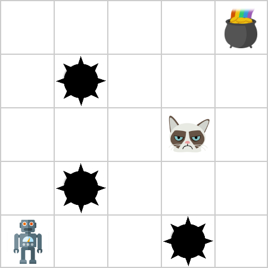
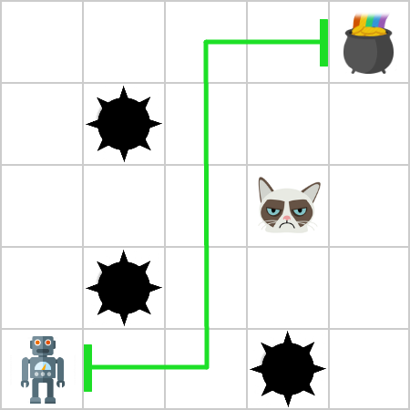
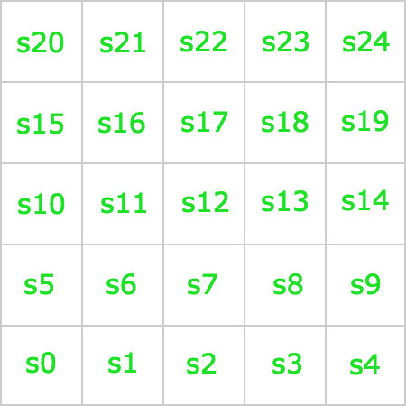
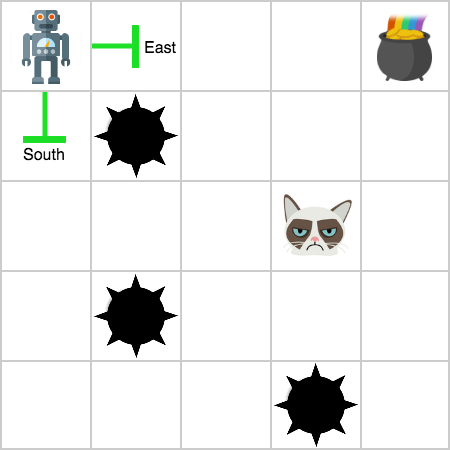
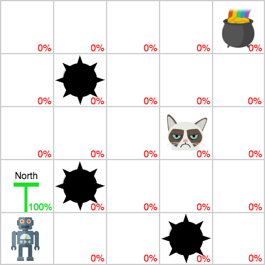
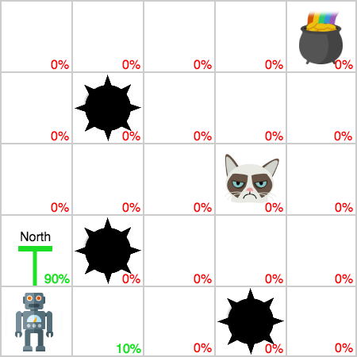
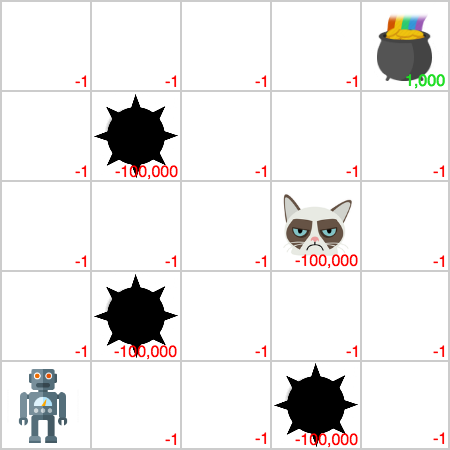
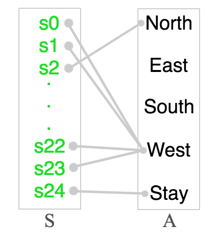
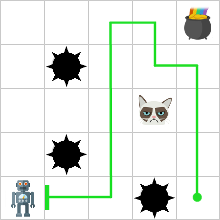

Suppose we're a treasure hunter (like Indiana Jones or something) searching for a famous treasure chest hidden somewhere in the world. For the sake of simplicity, let's just assume our world isn't the earth but instead a 5x5 grid. In order to search for the treasure, we can move from one cell to another by going north, east, south, or west. Moreover, while we don't know the world at all, we at least know that one of the cells contains the treasure. So, if we could navigate the world successfully and find the treasure, we would be immeasurably rich like Tywin Lannister and hopefully just as awesome. Unfortunately, there's a catch. While most of the cells in the world are empty, there are a few that have traps in them like a giant cat monster or a pit of spikes. If we were to accidentally move into any of those cells, we'd probably die a painful death.

Since we want to hit it rich and not die, we need to come up with a plan that leads to the treasure but avoids the traps. In our case, a plan is just the series of moves that we should take (e.g., north, east, south, or west) from our current location to the goal state (e.g., the treasure). After we complete every action in our plan, we'll end up at the treasure (which means we weren't a giant cat monster's supper). Sounds pretty easy, right? Just (1) come up with a plan that goes from our current location to the treasure, then (2) follow that plan by doing the suggested actions, and finally (3) reap the reward of infinite wealth!

Sadly, it's not that easy. While it might be trivial in this simple problem, it's a lot harder in the real world to come up with a plan. In fact, if we had a harder problem, we'd need to represent it as mathematical model in order to make a plan. As a result, before we can deposit a nice, fat check into our bank accounts, we need to convert our treasure-hunting scenario into a mathematical model that we can solve using one of many different algorithms.
For now, this is the big question we need to figure out: how do we come up with a mathematical model that represents our scenario to snag the treasure without getting impaled by spikes or eaten by a giant cat monster?
To model any scenario like this, we can use a Markov decision process (or an MDP). An MDP is just a formal representation of the type of problem we just saw. Generally, it's composed of four parts:
The set S contains every state of the world. Each cell in our treasure-hunting world (which, as a reminder, is a 5x5 grid) corresponds to a state. This means we have a set of twenty-five states:
For your convenience, here's an image that labels every state of the world:

The set A contains every action that the agent can take in the world. By the way, if you don't know what an agent is, it's just the actor in the world. It could be you, a robot, a car, or anything else that follows a plan. In any case, we have a set of five actions in our example:
Why do we have the Stay action? This lets us sit around at the treasure once we've found it: we wouldn't want to move away from it once we've discovered the treasure after all of our hard work.
Keep in mind that each state has certain constraints that limit the actions available to the agent. For instance, if we were in the corner of the world, say, the top left corner, we couldn't move North or West since we're at the boundary of the world. We typically denote the actions available in a given state s as A(s). So, if we're in the top right corner of the world, s20, these would be the only actions available to the agent:
This visualization should probably help:

The function T(s, a) is the state-transition function. It returns a probability distribution over every possible state of the world S if the agent were to perform action a in state s. For example, if we were in the bottom left corner of the world, say, s0, and we performed the action North, the function T(s0, North) would return the following probability distribution:
This funny notation just assigns a probability of entering each state of the world if we performed action North in state s0. Since our world is deterministic, the state s5 has a probability of 1.0. Check this out to see what I mean:

In real world examples, however, the outcomes of actions are typically probabilistic. This means that an action could lead to different states, not just one like our example. In a more realistic MDP, we could perhaps associate a probability of slipping with every action. So, even if we performed the action North, we could slip and accidentally end up in the wrong state. This happens a lot in robotics:

For now, let's just assume we have a deterministic world to make things easy.
The function R(s, a) is the reward function. It returns the reward that the agent after performing action a in state s. In our world, let's assume that the treasure is in the top right corner of the world s23. As a result, if we were in state s23, which is the cell east of s24, and we performed the action West, the function R(s24, West) would return 1,000 since we just hit the treasure! Formally, we'd write this:
Performing any action in any empty cell would return a reward of -1 since moving repeatedly over empty cells should have some cost associated with it. If it didn't, we could do a few loops around the world before finding the treasure without penalty. We'd rather follow the shortest path to the treasure.
Unfortunately, if we were to land in a state that has a giant cat monster or a pit of spikes, we would get a reward of -100,000. This high, negative number represents our death. We probably want to avoid that at all costs unless we're a pretty sadistic treasure hunter.
In short, here's how our world looks with rewards:

These four components completely specify the problem that we outlined in the first section! But all this does is give us a way to model the problem mathematically as an MDP. In other words, while we now have our scenario represented as an MDP, we still haven't found the plan that we should follow to get the treasure. How do we go about doing that? That is, what actions should we take to get the treasure and avoid dying? There are a lot of fancy things that we can do to get the best plan from our MDP. However, before we talk about that, let's talk a little more about what plans are.
In planning, we usually formulate a plan as a policy. By the way, this is only kind of true, but let's roll with it for now. Anyway, what is a policy? It's just a map that associates every state of the world with a recommended action:

To be a little more formal, a policy π is a mapping between each state s and an action a:
That's great, Justin! I kinda get what a policy is now. Why do we need one? Why do we want to map actions to states? A policy is important because it specifies the action that the agent ought to take in every state of the world. For example, let's suppose the agent is in state s23, which is directly east of the pot of goal. To figure out what action to take, we would take out our policy to see what action to perform in s23. In an ideal world, our policy should tell us this (because it would make us move to the treasure):
However, it's important to note that our policy doesn't have to associate each state with a good action! A policy is just something that links states to actions, and that's it. There are a ton of policies out there that we can have, and, among all of the garbage policies out there, we need to find the best one. If we followed a bad policy, we'd probably avoid the treasure and do something like this:

Notice how we walked right past the treasure. Yeah, that's not good. On the other hand, this is what we'd do if we followed the optimal policy (or the best policy we can have):
The big question in planning is now this: after we model the problem as an MDP, how do we come up with the best policy amidst all of the crappy polices out there? While there are many different approaches to this question, the next tutorial will discuss value iteration, one of the most basic (and naive) algorithms for finding the optimal policy. Stay tuned!